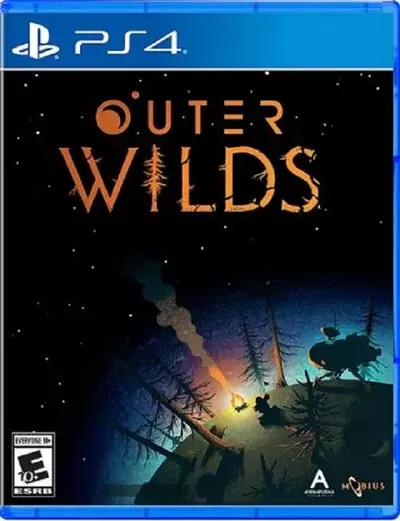
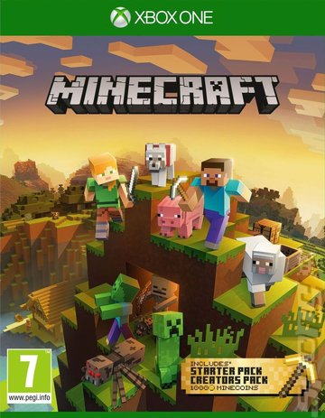
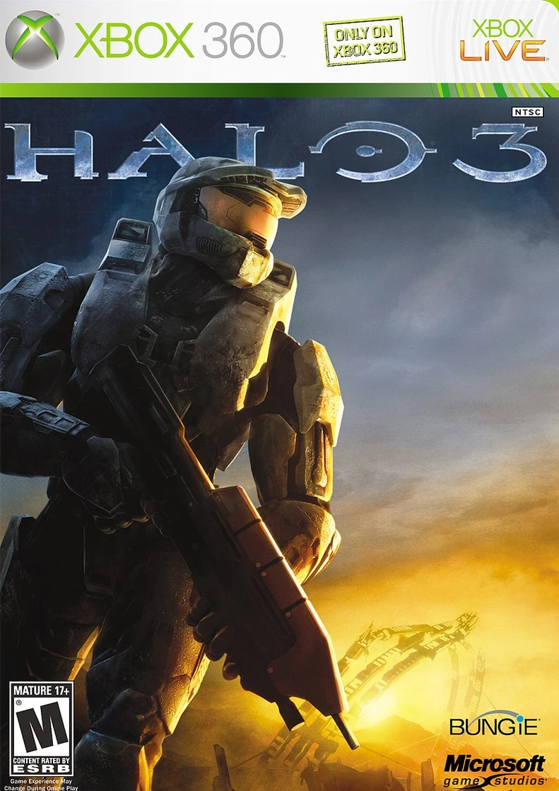
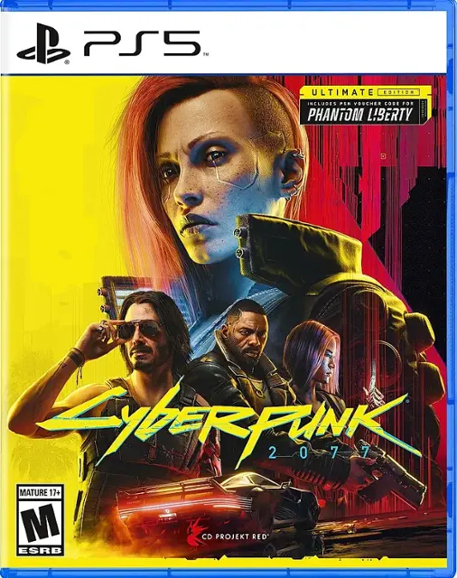
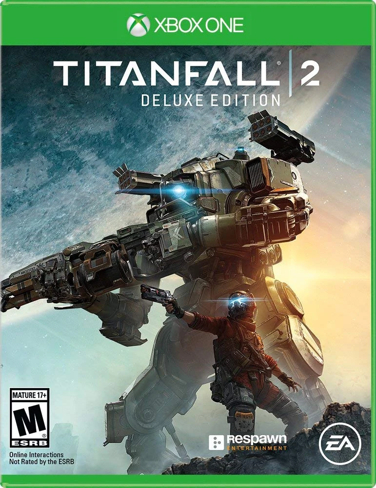

I have been playing video games for almost my entire life, obviously this means I have finished a game or two. I wanted to make this list for class, but also because I thought it would be fun to round up some of my favorites and make a table and list providing information about them.
Playing video games has always allowed for me to enter different worlds and experience the worlds that they provide. When I came home from school as a kid you could either find me with a book in front of my face or a controller in my hand. It was also a way for me and my family to bond together, as we all liked playing games together. Some of my favorite memories are from when I was playing Call of Duty with my siblings and my dad, trash talking each other and getting mad when we all inevitably lost to my older brother.
| Name | Description | Date of Release | Cover Art | Rating |
|---|---|---|---|---|
| Outer Wilds | A game with a wonderfully crafted universe and a detailed story-line. Embark on your spaceship to craft your own adventure through the solar-system in order to discover its secret. This is a game that will make you rethink how you view the world around you |
June 2020 |  | E |
| Minecraft | A survival crafting game where your creation can know no bounds. This game if full of anything any player could want; you could spend your days mining for ores, building contraptions to automate your world, or spend it fighting for your life in other dimensions |
May 2009 |  | E |
| Halo 3 | On an alien ring world you fight to defend humanity, armed with a few guns and a sentient AI you must take down the Covenant. A master-class game in storytelling with a healthy dose of top tier action combat. |
September 2007 |  | M |
| Cyberpunk 2077 | In 2077 you can choose who you want to be; a sword swinging assassin, how about a master hacker who's able to break the minds of anyone who dares cross you. |
December 2020 |  | M |
| Titanfall 2 | A fast-paced first person shooting game matched with another amazing story to share. This game has you double-jumping and parkouring to save the world along with your multi-storied mechanical titan to carry you through it all the way. |
October 2016 |  | M |